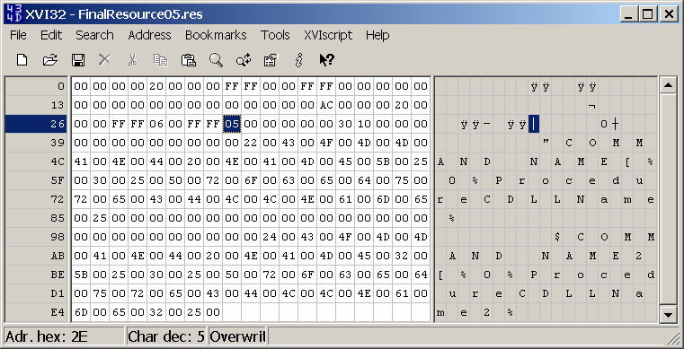

General HELP
Resources Creation
If you need more resources files than the amount given with
PurePLUGIN, you can freely follow the procedure:
1. Download and install a free HEX EDITOR (like XVI32
used for this help)
2. Open the file PurePLUGIN Development\String Tables\FinalResource01.res
3. Using the HEX Editor, jump at offset #2A like on the picture available
at bottom.
4. Change the value with the one for the String Table ID you want to create.
5. Use menu File/Save As and create the new String Table file.
Using this procedure, you can create a really large amount of Resources.
But don't forget one things, the number of commands you can create for each
resources are 16, excepted for the 1st one of the DLL that contain only 15
resource.
To calculate the numbers of the commands for each string table, simply use
this:
FIRST_COMMAND = ( 16 * String Table ID ) ) - 15
You'll then have:
String Table 1 : commands 1-15
String Table 2 : commands 16-31
String Table 3 : commands 32-47
...
String Table 15 : commands 225-240
String Table 16 : commands 241-256
...
XVI editing a resource to create a new String Table ID:
